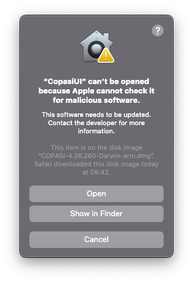

On newer macOS versions, several security prompts will be issued, when starting CopasiUI for the first time.
After a click on OK, start the System Preference Menu, and navigate to the Security tab:
Here CopasiUI will be listed, as having tried to be opened. Click on Open Anyway so that CopasiUI can be started in the future.
Now start CopasiUI again, and you will see this confirmation prompt.
After a click on Open, Copasi can finally be started.